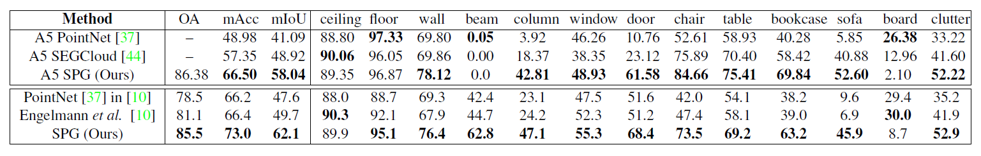

Large-scale Point Cloud Semantic Segmentation with Superpoint Graphs 리뷰
오늘 소개드릴 논문은 2018년 CVPR에서 소개된 Large-scale point cloud semantic segmentation with superpoint graphs 논문에 대한 리뷰입니다.
기존에 진행된 많은 AI 기반의 point cloud 연구는 좋은 성능을 보여주었지만, input size의 한계 때문에 적은 수의 점들로 구성된 point cloud에 대해서만 적용할 수 있었습니다. Neural network는 몇 백만개 이상의 점들로 구성된 LiDAR scan을 직접 다루기 어려웠고, down-sampling 하는 등의 후처리를 거쳐서 network의 input으로 이용했습니다. 하지만 이는 point cloud의 장점인 물체에 대한 정교한 표현력을 떨어트릴 수밖에 없었습니다. 오늘 소개드릴 연구는 기존의 연구와는 달리 몇 백만개 단위의 점들로 구성된 point cloud를 대상으로 semantic segmentation을 수행하였습니다. 논문에서는 유사한 구조의 점들을 superpoint라는 하나의 점으로 모아서 새로운 그래프(superpoint graph)를 구성했습니다. Superpoint graph(SPG)는 많은 점들로 구성되어 물체 간의 의미론적 관계에 대한 풍부한 정보를 담고 있기 때문에 semantic segmentation 성능을 크게 끌어올릴 수 있었습니다.
수학적인 내용이 많아 어려웠지만, 최대한 잘 정리해보겠습니다 :)
Superpoint Graph (SPG)
SPG는 point cloud로부터 크게 세 단계를 거쳐서 생성됩니다. 우선, 전체 point cloud에서 기하학적으로 비슷한 구조를 가진 점들을 묶어서 작은 여러 개의 point cloud로 분리합니다. 이후, 분리된 각각의 point cloud를 하나의 점으로 변환하는데, 이를 논문에서는 superpoint라고 정의합니다. 이 때 분리된 point cloud 내에 속한 점들의 feature vector를 통합해서 각 superpoint의 embedding vector를 추출합니다. 마지막으로 superpoint 간의 연결 관계를 파악해서 edge를 연결하고, 이를 graph convolution network에 넣어서 segmentation task를 수행합니다. 그럼 각각의 부분에 대해서 자세히 설명하겠습니다.
- Geometric Partitioning
Superpoint graph를 구성하기 위해서는 우선 많은 수의 점들로 구성된 point cloud를 작은 점들의 단위로 분리해주어야 합니다. 이 때 단순하고 비슷한 기하학적 모양을 가진 점들을 묶어줌으로써, 점들이 전반적으로 균일한 의미론적 특징을 가지고 실제로도 같은 class에 해당하게끔 설정해주었습니다. 또한 많은 수의 점들이 partitioning 과정을 거쳐야 하기 때문에 계산량 측면에서 효율적인 방법을 이용해주어야 합니다. 논문에서는 global energy model을 통해서 점들을 분리해주었습니다.
Global enerygy model은 각 점마다 주변 점들의 모양에 대한 특징을 담은 geometric vector를 계산하고, geometric vector가 비슷한 점들 끼리 연결해주는 partitioning 방법입니다. 논문에서는 각 점과 주변 점들에 대한 선형성(linearity), 평면성(planarity), 분산성(scattering), 수직성(verticality)와 높이를 geometric vector로 이용했습니다. 이후 점들의 geometric vector들에 대한 최적화 문제를 푸는 방식으로 connected components를 찾아주었습니다. Point cloud의 크기가 커질 경우에 geometric vector가 nonconvex 하거나 noncontinuous 할 수 있기 때문에, 이러한 경우 graph cut 알고리즘의 하나인 persuit cut을 이용해서 graph를 여러 개로 나눠 크기를 줄여주었습니다. (Graph cut 알고리즘은 분리된 점들 간의 edge distance가 가장 멀게끔 graph를 두 개로 나누는 방법입니다.)
이렇게 partitioning을 통해서 connected components S = {S1, S2, …, Sk} 를 얻을 수 있는데, 각 component들은 기하학적으로 간단한 구조를 가지며 component 내의 점들은 같은 구조를 가지게 됩니다. 앞으로는 이를 superpoint라고 부르고, 이를 통해 graph를 형성해서 segmentation을 수행할 것입니다.
- Superpoint Graph Construction
이제 각 superpoint를 node로 하는 하나의 graph를 형성할 것입니다. 일단 superpoint를 형성하기 전, 전체 input point cloud에 대해 인접한 점들을 연결하는 Voronoi adjacency graph를 형성합니다. Superpoint 간의 연결관계는 superpoint 내에 속한 점들이 Voronoi adjacency graph 상에서 연결되었는지에 따라 결정합니다. 예를 들면, S 와 T 라는 superpoint가 있고 내부에 각각 s1 과 t1 이라는 점이 소속되어 있다고 하면, s1 과 t1 이 연결되었다면 S 와 T 도 인접한 것으로 간주합니다. 반대로 만약 S 와 T 내의 모든 점들 간에 연결 관계가 없다면, S 와 T 는 인접하지 않은 것으로 간주합니다. Superpoint 간의 연결된 edge는 Superedge 라고 부릅니다.
이제 superedge feature를 정의해야 합니다. Superedge feature은 superpoint 내 점들 간의 모양이나 크기에 따라 정의합니다. 논문에서는 위의 7개 특징에 대한 13차원의 superedge feature를 통해 superpoint의 특징 및 주변 superpoint 간의 연결 관계를 표현했습니다. 이 때 length, surface, volume 등의 feature은 x,y,z 좌표값의 covariance matrix에 대한 eigenvalue를 통해 principle component에 대한 크기를 계산하고, 이 eigenvalue의 곱으로(각각 e1 , e1 x e2 , e1 x e2 x e3) 표현했습니다. 또한 centroid offset 이나 length ratio 등은 graph의 방향에 따라 값이 달라지기 때문에, superpoint graph는 directed graph의 형태를 띄게 됩니다.
- Superpoint Embedding
Superpoint 내의 점들은 같은 기하학적 특성을 공유하므로, 각 superpoint 별로 embedding vector를 추출할 수 있습니다. 논문에서는 PointNet을 통해서 superpoint의 contextual information을 추출합니다. 이 때 같은 superpoint 내의 점들은 기하학적으로 간단하고 서로 유사하기 때문에, GPU efficiency를 위해 몇 개의 점들만 골라서 embedding을 해도 reliably represent 할 수 있습니다. 따라서 저자는 128개의 점들을 sampling해서 이에 대해서만 embedding vector를 추출했고, 만약 한 superpoint에 128개 이하의 점이 있다면 그대로 사용했습니다. (PointNet은 max-pooling을 통해서 embedding vector를 추출했기 때문에 점의 개수가 바뀌어도 같은 크기의 embedding vector를 얻을 수 있었습니다.) 다만 점의 개수가 40개 이하인 경우에는 embedding을 0으로 두었는데, superpoint의 대표성이 떨어져서 성능 저하를 유발했기 때문입니다. 이렇게 superpoint 내에서 sub-sampling을 하게 되면 메모리 측면에서 효율적일 뿐만아니라 augmentation을 해주는 효과도 있었습니다.
- Contextual Segmentation
Superpoint, superedge를 통해 superpoint graph를 정의했다면, 이제 이를 graph convolution을 통해 segmentation 해야 합니다. 이는 Gated Graph Neural Networks와 Edge-Conditioned Convolution을 이용해서 진행되었습니다. 간단히 설명드리자면 Gated Recurrent Unit(GRU)를 통해 각 superpoint에 대한 embedding을 update했는데, 이 때 이용되는 incoming message vector를 주변 superpoint와의 graph convolution을 통해서 얻었습니다. Graph convolution은 앞서 말한 edge-conditioned convolution 기반의 방법으로 진행되었는데, multi-layer perceptron을 통해 구현된 filter generating network가 edge feature vector로부터 attention weight을 계산하면, 이 weight를 기반으로 주변 점들의 feature vector를 dynamic하게 더해주었습니다.
- Training
Geometric partitioning 단계는 unsupervised하게 학습되었고, superpoint embedding과 contextual segmentation 과정은 supervised하게 동시에 학습되었습니다. Superpoint 내의 점들은 같은 label을 가진 점들로 가정하였기 때문에, 점들의 label들 중 대다수에 해당하는 것으로 지정했습니다. Superpoint graph의 크기가 커서 GPU limit을 뛰어넘는 경우에는, SPG로부터 몇개의 superpoint(512개)만을 sub-sampling해서 크기가 작은 SPG를 형성하고 기존 SPG와 같은 연결 관계(superedge)를 형성한 후에 작은 SPG에 대해서 학습을 진행했습니다. 이렇게 하면 메모리 이슈도 해결할 수 있고, 동시에 data augmentation의 효과도 가져갈 수 있습니다.
Experiments
다른 논문들에서와 마찬가지로 가장 일반적인 3D semantic point cloud segmentation 평가 지표인 Semantic3D와 S3DIS dataset을 이용한 성능 평가가 진행되었습니다. 성능은 IOU와 overall accuracy로 측정하였습니다.
- Semantic3D
Semantic3D는 30억개 이상의 점들로 구성된 가장 큰 LiDAR dataset입니다. SPG는 기존의 SOTA 모델보다 12mIOU points나 높은 SOTA의 성능을 보여주었습니다.
- S3DIS

S3DIS는 실내 환경에 대한 3D RGB point cloud dataset입니다. Area 5를 제외한 나머지 영역에 대해 학습을 진행했고, area 5를 이용해서 평가하였습니다. 전반적인 성능에 대해 SOTA를 기록했지만, white board와 같은 경우 partitioning 과정에서 wall과 제대로 구별이 되지 않으며 평균보다 낮은 IOU를 기록하기도 했습니다.
또한 많은 점들에 대한 inference 시간을 줄이기 위해, voxelization 형태의 전처리를 진행하고 결과를 보여주었습니다. 위의 표에서 알 수 있듯이 적절한 크기의 voxel 단위로 점들의 개수를 줄여준 경우에, inference 속도도 빨라지고 정확도도 증가하는 것을 볼 수 있었습니다.
Ablations
SPG 모델에 활용된 여러가지 모듈들의 성능을 검증하기 위해 ablation study가 진행되었습니다.
우선 superpoint graph에 대해 graph convolution을 통해서 contextual information을 추출하는 것이 성능 향상에 얼마나 많은 영향을 주었는지를 확인했습니다. 기존 모델을 Perfect model이라고 할 때, superpoint graph를 GRU가 아닌 일반적인 PointNet을 활용해 처리하는 모델을 Unary model로 하여 두 성능을 비교했습니다. 결과는 22mIOU points에 가까운 성능 하락이 발생하여 graph convolution 기반의 모델을 통해 contextual information을 파악하는 것이 얼마나 중요한지를 보여주었습니다.
그 외에 GRU + ECC를 이용하는 대신 CRF-RNN을 이용해보는 등 CRF를 후처리로 하는 모델들과의 비교, GRU 기반의 구조를 수정한 모델에 대한 성능 비교 등을 진행했습니다. 결과는 SPG Perfect 모델의 압승이었습니다. 중요하진 않은 것 같아서 넘어가겠습니다.
Summary
Superpoint Graph는 많은 점들을 partitioning 과정을 통해 효율적으로 graph convolution 연산에 적용하는 방법을 제시했습니다. 기존과 달리 많은 수의 점들로 구성된 dataset으로 학습을 진행할 수 있었고, 디테일하고 많은 정보량 덕분인지 월등히 좋은 성능을 보여주었습니다. 또한 graph congolution 연산에 적용해 contextual information도 알맞게 추출하여 성능 향상에 기여하였습니다. 많은 점들에 대한 학습을 가능하게 한 실험적인 좋은 논문이라고 생각됩니다 :)
참고 문헌 및 출처